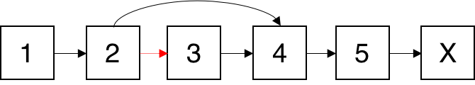

237. Delete Node in a Linked List
这个题其实很简单！把节点的值覆盖当前节点的值即可。
没想到打脸如此之快！还有更简单的办法，两行代码搞定：①把下一个节点的值拷贝到当前节点；②把当前节点的下一节点指向下下一个节点即可。


Write a function to delete a node (except the tail) in a singly linked list, given only access to that node.
Given linked list — head = [4,5,1,9], which looks like following:

Example 1:
Input: head = [4,5,1,9], node = 5 Output: [4,1,9] Explanation: You are given the second node with value 5, the linked list should become 4 -> 1 -> 9 after calling your function.
Example 2:
Input: head = [4,5,1,9], node = 1 Output: [4,5,9] Explanation: You are given the third node with value 1, the linked list should become 4 -> 5 -> 9 after calling your function.
Note:
-
The linked list will have at least two elements.
-
All of the nodes' values will be unique.
-
The given node will not be the tail and it will always be a valid node of the linked list.
-
Do not return anything from your function.
package com.diguage.algorithm.leetcode;
import com.diguage.algorithm.util.ListNode;
import java.util.Arrays;
import java.util.Objects;
import static com.diguage.algorithm.util.ListNodeUtils.build;
import static com.diguage.algorithm.util.ListNodeUtils.printListNode;
/**
* = 237. Delete Node in a Linked List
*
* Write a function to delete a node (except the tail) in a singly linked list, given only access to that node.
*
* Given linked list -- head = [4,5,1,9], which looks like following:
*
* .Example 2:
* [source]
* ----
* Input: head = [4,5,1,9], node = 5
* Output: [4,1,9]
* Explanation: You are given the second node with value 5, the linked list should become 4 -> 1 -> 9 after calling your function.
* ----
*
* .Example 1:
* [source]
* ----
* Input: head = [4,5,1,9], node = 1
* Output: [4,5,9]
* Explanation: You are given the third node with value 1, the linked list should become 4 -> 5 -> 9 after calling your function.
* ----
*
* *Note:*
*
* * The linked list will have at least two elements.
* * All of the nodes' values will be unique.
* * The given node will not be the tail and it will always be a valid node of the linked list.
* * Do not return anything from your function.
*
* @author D瓜哥, https://www.diguage.com/
* @since 2020-01-13 20:28
*/
public class _0237_DeleteNodeInALinkedList {
/**
* Runtime: 0 ms, faster than 100.00% of Java online submissions for Delete Node in a Linked List.
*
* Memory Usage: 36.2 MB, less than 100.00% of Java online submissions for Delete Node in a Linked List.
*
* Copy from: https://leetcode.com/problems/delete-node-in-a-linked-list/solution/[Delete Node in a Linked List solution - LeetCode]
*/
public void deleteNode(ListNode node) {
node.val = node.next.val;
node.next = node.next.next;
}
/**
* Runtime: 0 ms, faster than 100.00% of Java online submissions for Delete Node in a Linked List.
*
* Memory Usage: 36.5 MB, less than 100.00% of Java online submissions for Delete Node in a Linked List.
*/
public void deleteNodeCopyList(ListNode node) {
ListNode current = node;
while (Objects.nonNull(current) && Objects.nonNull(current.next)) {
ListNode next = current.next;
current.val = next.val;
if (Objects.nonNull(next.next)) {
current = next;
} else {
current.next = null;
}
}
}
public static void main(String[] args) {
_0237_DeleteNodeInALinkedList solution = new _0237_DeleteNodeInALinkedList();
ListNode l1 = build(Arrays.asList(1, 2, 3));
solution.deleteNode(l1);
printListNode(l1);
}
}